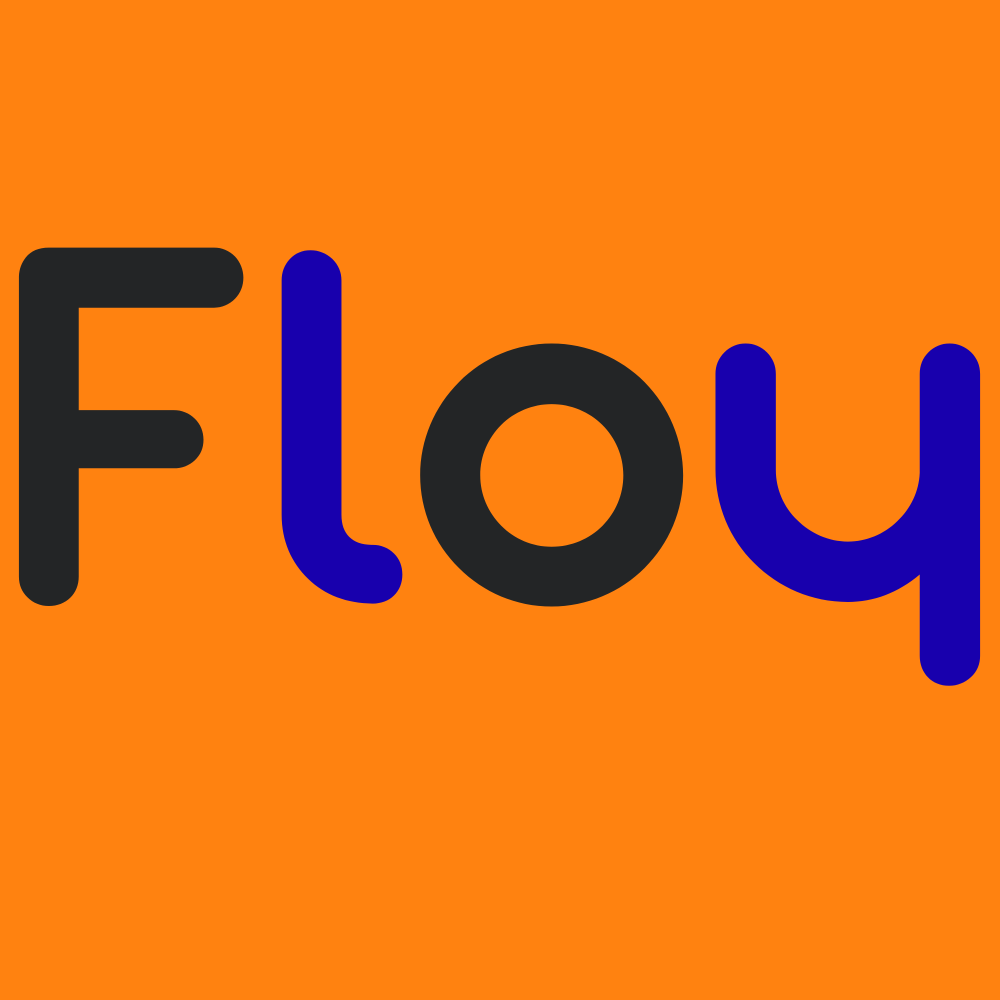

Support Floy
En ligne
Bienvenue sur Floy ! Comment puis-je vous aider aujourd'hui ?
Bonjour, j'adore le nouveau thème sombre et orange !
Merci ! C'est le mélange "Noir & Dégradé" pour plus d'élégance. 😊